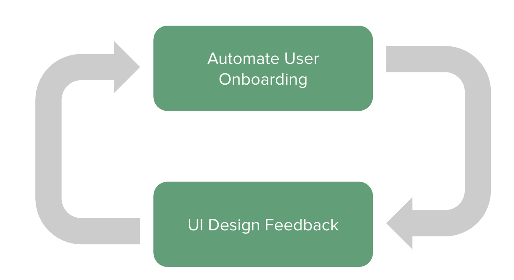
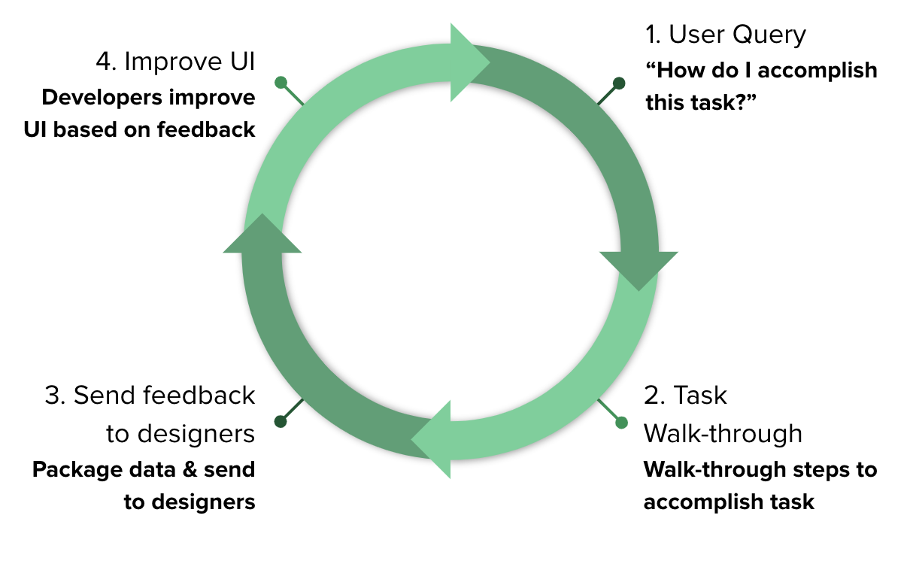

Automated App Walkthroughs
Project Info:
Team Size: 3
Technologies/Tools used: Figma
Project Timeline: February 2021 - May 2021
Motivation
An automated on-boarding experience that allows for customized user-specific queries and interaction. We also want to extend the scope of onboarding by allowing designers to obtain actionable feedback using user interactions with the onboarding system.
 Observations regarding current onboarding systems
The need to transition manual onboarding (via human agents) to a fully automated workflow in order to provide consistent onboarding experiences to all customers and to reduce the customer acquisition costs.
Current automated onboarding systems do not provide customized support for customer-specific queries/requests.
We believe that integrating system/UI designers into the customer onboarding loop is vital for consumer-centric product/UI iterations. This can be done using a data-driven approach by providing actionable insights from the customer onboarding experience to the designers.